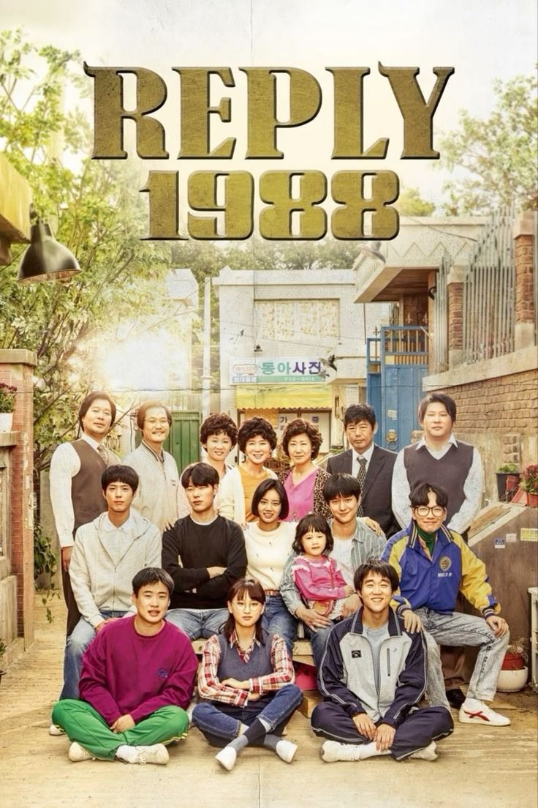
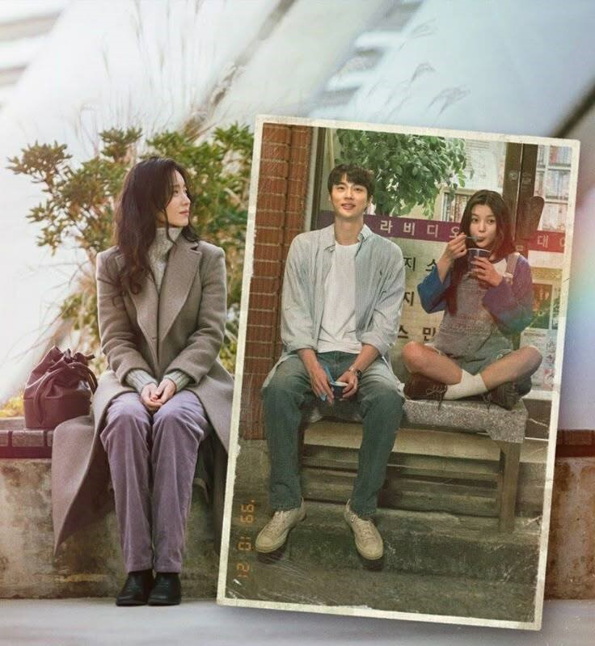

K-Drama Archive adalah website yang berisi informasi seputar drama Korea. Di sini kamu bisa menemukan berbagai rekomendasi drama, genre, aktor, dan informasi menarik lainnya tentang dunia K-Drama.
Favorite Quote
"Every drama has its own story."
Popular Actors
- Byeon Woo-seok
- Song Kang
- Kim Yoo-jung
- Park Bogum
- IU
- Kim Moo-yul
- Lee Sung-min
- Jin Ki-joo
- Pyo Ji-hoon
- dll
Must-Watch K-Dramas
| No | Drama | Year |
|---|---|---|
| 1 | 20th Century Girl | 2022 |
| 2 | When Life GivesYou Tangerines | 2025 |
| 3 | True Beauty | 2022 |
| 4 | Teach You a Lesson | 2026 |
| 5 | Twinkling Watermelon | 2023 |
| 6 | My Demon | 2023 |
| 7 | Replay 1988 | 2015 |
Drama Genres
- Romance - cerita tentang percintaan.
- Comedy - cerita yang menghibur dan lucu.
- Thriller - cerita penuh misteri dan ketegangan.
- Action - cerita dengan adegan aksi.
- Fantasy - cerita dengan unsur khayalan.
Drama Gallery



Drama of the Day
Doctor X: Mafia in White
Drama ini diadaptasi dari Doctor-X: Surgeon Michiko Daimon karya TV Asahi dan menggambarkan seorang ahli bedah yang membuktikan kemampuannya semata-mata melalui keahliannya, saat ia mengoperasi organisasi korup yang penuh dengan ketidakadilan. Namun drama ini masih ongoing.
Latest Articles

20th Century Girl
Drama ini menceritakan Kisah tentang cinta pertama yang menyakitkan tetapi mendebarkan dari seorang gadis berusia 17 tahun, Bora (Kim Yoo-jung), yang menempatkan persahabatan di atas cinta pada tahun 1999, yang terakhir dari abad ke-20, dan berita tentang itu cinta kembali terdengar di abad ke-21.
Read More
Drama Korea tentang Kehidupan
Drama ini mengikuti kehidupan penuh petualangan dan berbagai cobaan yang dialami Ae-sun ( IU ), seorang gadis miskin yang ingin menjadi penyair yang lahir di Jeju pada tahun 1951, dan Gwan-sik ( Park Bo-gum ), seorang pemuda yang menyayangi dan mencintainya.
Read More
Rekomendasi Drama Romantis
Drama romantis Korea selalu punya cerita yang menarik untuk diikuti, karena membuat penonton yang menyaksikannya ikut berbunga-bunga.
Read More